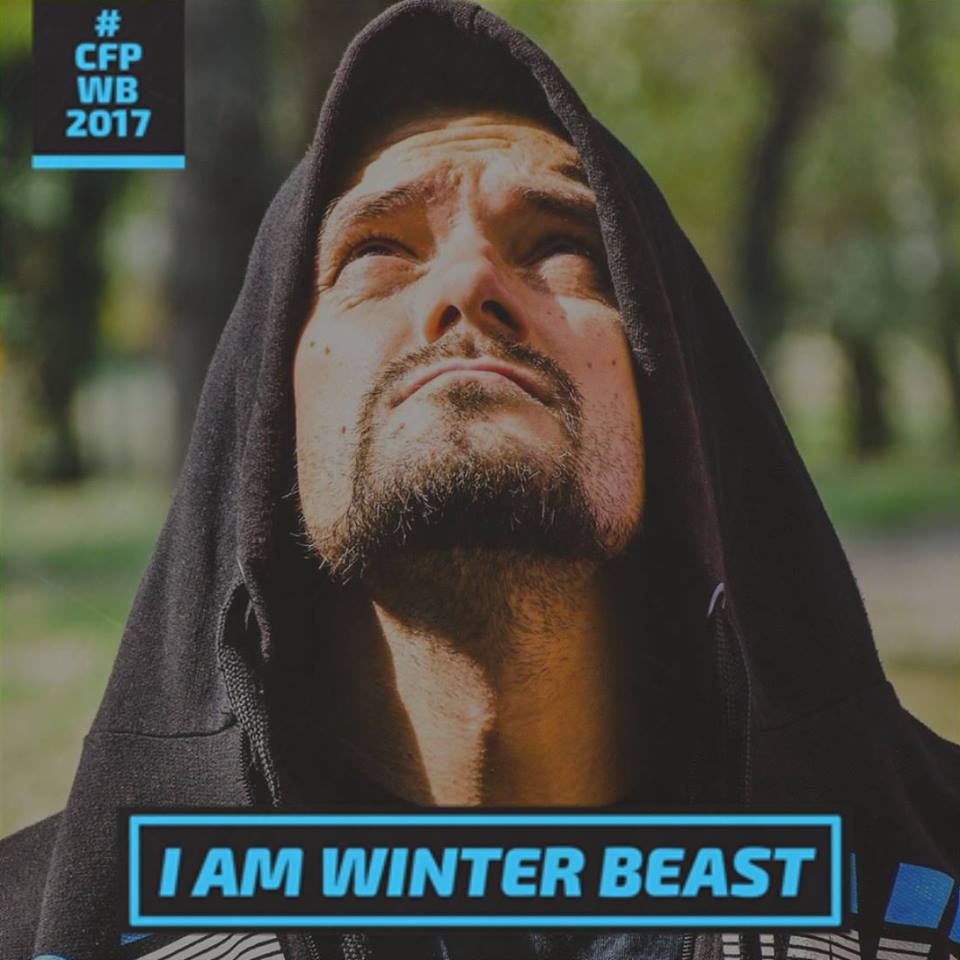
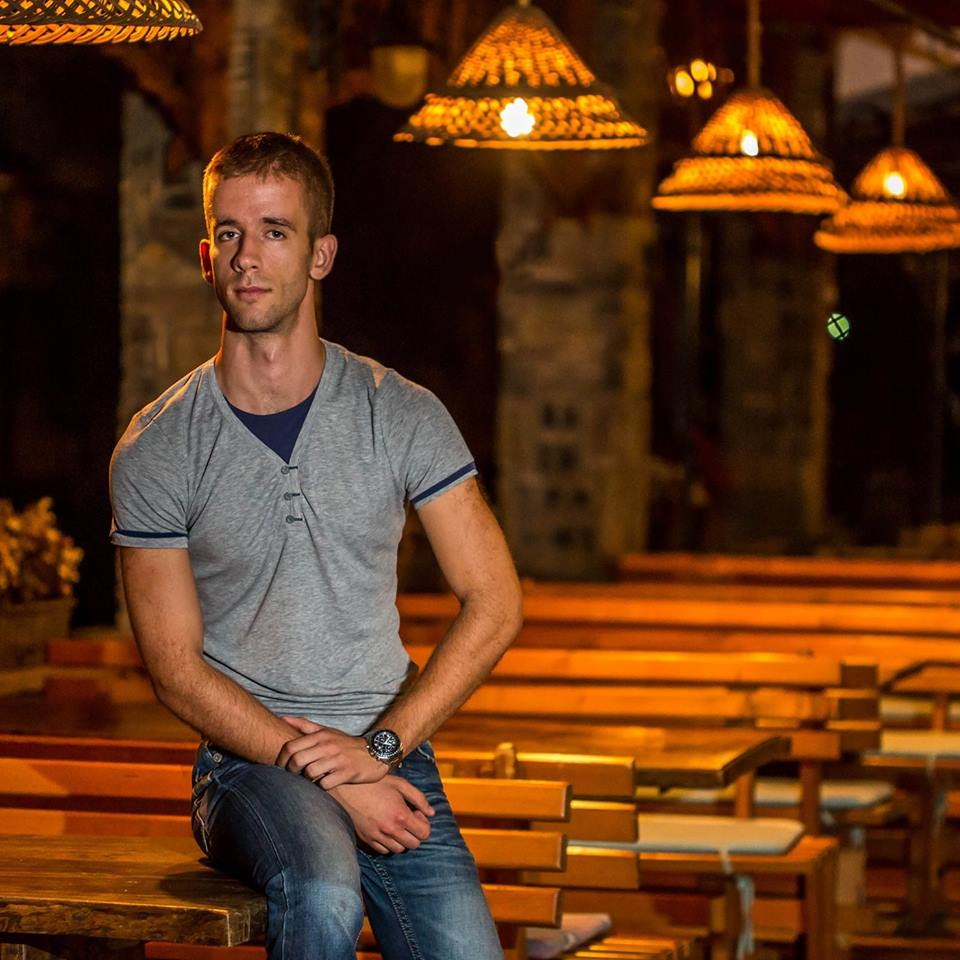

Centar za razvoj preduzetničkog ekosistema bavi se izgradnjom dobrih temelja poslovanja, kako bi se postavio
sistem za održivo poslovanje kao i razvijanjem inovativnih poslovnih modela.
Centar za razvoj preduzetničkog ekosistema pruža vam i mentorsku podršku, mogućnost da ponudite svoje
proizvode i usluge ostalim članovima centra, da imate pristup svim relevantnim informacijama iz poslovnih i
finansijskih sfera, da vam pomognemo u organizaciji prezentacije proizvoda/usluga, organizaciji događaja i
sl. Naš tim iskusnih trenera i profesionalaca bavi se izgradnjom plana (ličnog i profesionalnog) razvoja
lidera i zaposlenih kao i jačanjem produktivnosti, povećanjem posvećenosti i inicijative zaposlenih.
Naučite kako da
pokrenete vaš posao
postavite održivi poslovni model
napišete poslovni plan
sprovede marketing strategiju
realizujete vašu poslovnu idejupreduzetnički ekosistem složena je simbioza mnoštva manjih delova -
pojedinaca, preduzetnika, institucija, propisa, finansija, tržišta, kulture, obrazovanja itd
Usluge
Izgradnja plana (ličnog i profesionalnog) razvoja lidera i zaposlenih
Razvijanje inovativnog poslovnog modela
Podrška u pozicioniranju na tržištu (putem networking-a) sa novim uslugama
Jačanje produktivnosti, povećanje posvećenosti i inicijative zaposlenih
Mentorske usluge
Mentorstvo je kompleksan, interaktivan proces koji se odvija između osoba različitog nivoa iskustva i
stručnosti, u kojem stručnija i iskusnija osoba (mentor) daju podršku manje iskusnoj osobi (menti) kako bi
postale efikasnije u radu i doprinele ostvarenju svojih ličnih i profesionalnih ciljeva.
Cilj mentorstva je da otvori mogućnost za stalno unapređenje znanja i veština, odnosno ličnog i
profesionalnog razvoja, kao i napredovanja u karijeri. Mentorska podrška u centru za razvoj preduzetničkog
ekositema podrazumeva pružanje stručnih (specijalizovanih) usluga (strateškog planiranja, prodajno
savetodavnih, marketinških, pravno- ekonomskih, pomoć u prikupljanju sredstava i dr.) u znanju, radu i
stvaralačkom razmišljanju, čime pružamo podršku nastanku, opstanku i samoodrživom razvoju preduzeća i
preduzetnika u fazi kada su ona najugroženija – neposredno pre i nakon osnivanja.
Preporuke

Marko Vlajić
Combat fit program
Većina ljudi traga za boljim poslom, neki od njih odaberu svoj put da sami uzmu stvar u svoje ruke i
postanu preduzetnici. Kao početnik, osoba ima milion pitanja oko toga šta, gde, kako krenuti? Ova
ekipa će dati milion odgovora. Sve što budućem preduzetniku treba NA JEDNOM MESTU! Preporuka!

Nemanja Potkonjak
CEO www.smartdesigns-ns.com
Vrhunac učenja u životu je kada znanje koje ste usvojili i primenili možete preneti na druge.
Stručnost i znanje koje poseduje gospodin Aleksandar Pokrajac, je izuzetno veliko i široko. Ko god
želi da ostvari svoje poslovne ideje i snove neće pogrešiti ako mu se obrati za savet! Stoga ljudi,
napravite iskorak iz zone komfora i uplovite u jedno lepo putovanje preduzetništva, oko sebe imajte
stručne i proaktivne ljude koji će Vam pomoći na tom putu! Veliko hvala Aleksandru za sve do sada!